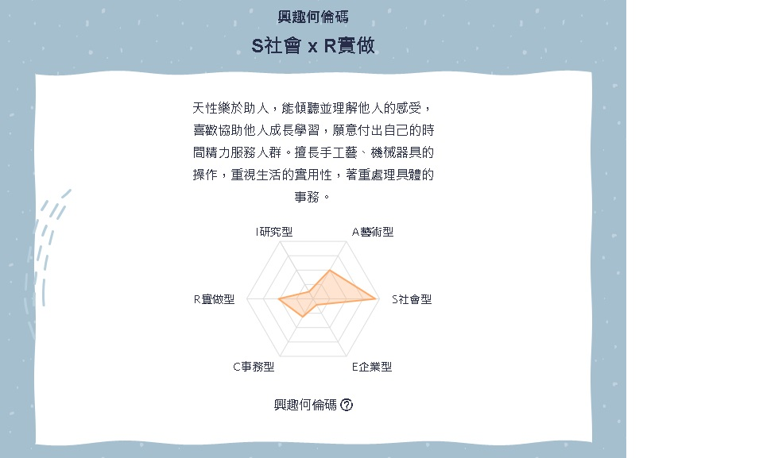

廖浩銘個人簡介
Hao-Ming Liao
靜宜大學企管系學生
學號:410808226
E-Mail:s1080822@gm.pu.edu.tw

根據興趣何倫碼顯示醫藥學群是我較為適合且其中的獸醫是我較為有興趣的職業，工作內容大多為治療診斷：診斷動物疾病，並透過內外科治療，幫助動物恢復健康。例如：開藥、手術。
動物用藥：幫動物進行藥劑製配、專業護理。例如：驅蟲藥、傷口包紮。
預防保健：幫動物打預防針，並教導飼主動物保健。
*其他：在農場工作的獸醫師也常會提供人工受精、建康檢查、農場衛生檢查、動物檢疫等工作